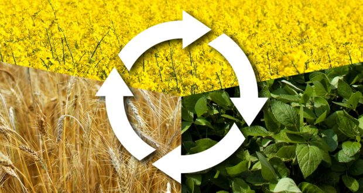

ROYAL IN FIELD - THE ROYAL FARMER
CROP ROTATION

If we grow crops continuously in the small field for many years, it results into various problems such as
1. Depletion (deficiency) of same types of nutrients and
2. Buildup of diseases and insects-pests.
This demands for the requirement of the practice of crop rotation. Crop rotation can be defined as the practice of growing different crops on a piece of land in a preplanned succession.
ADVANTAGES OF CROP ROTATION
- It controls pests and weeds. Most pathogens survive on crop residue, but only for limited time, and most pathogens do not infect multiple crops. By naturally breaking the cycles of weeds, insects and diseases, application of cost insecticides may be reduced.
- Crop rotation reduce the need of fertilizers. For example, nitrogen supply is maintained in the crop field when leguminous crops are alternated with others.
- Several crops maybe grown succession with only one Soil preparation. For example land is ploughed for maize and the maize stubbles is left on the land for wheat.
- By alternation between deep and shallow rooted crops, the soil may be utilized more completely.